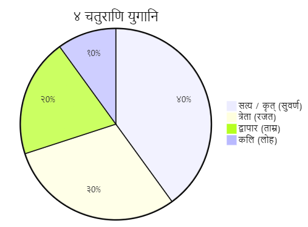

युगानि
४ चतुराणि

१. सत्य / कृत् (सुवर्ण) युगम्
विष्णो: अवतारा: - मस्त्य, कूर्म, वराह, नरसिंह
दुष्ट-प्रवृत्ति-स्तर: 0 प्रतिशतम्
२. त्रेता (रजत) युगम्
विष्णो: अवतारा: - वामन, परशुराम, राम
दुष्ट-प्रवृत्ति-स्तर: २५ प्रतिशतम्
ग्रन्थ: रामायणम्
३. द्वापार (ताम्र) युगम्
विष्णो: अवतारा: - कृष्ण, बुद्ध
दुष्ट-प्रवृत्ति-स्तर: ५0 प्रतिशतम्
४. कलि (लोह) युगम्
विष्णो: अवतारा: - कल्कि ("भविष्यत्" होणारा)
दुष्ट-प्रवृत्ति-स्तर: ७५ प्रतिशतम्